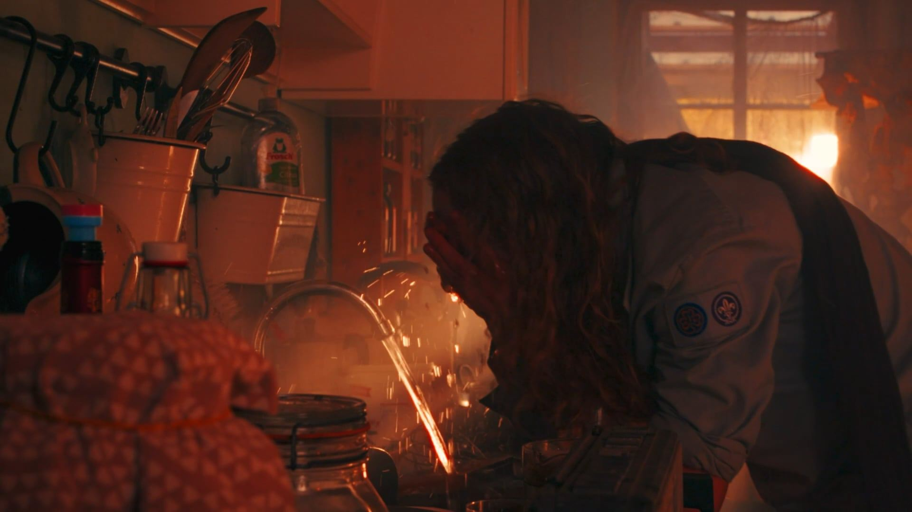
Filmproduktion aus Görlitz und Dresden. Für Filme, die Menschen fesseln, emotional berühren und überzeugen.
Meine Kunden
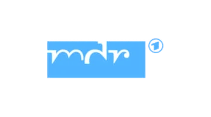
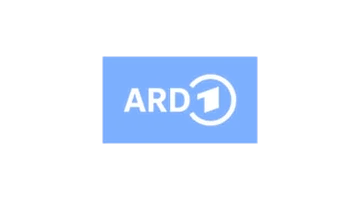
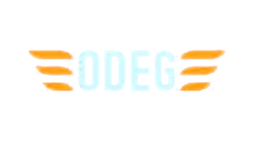
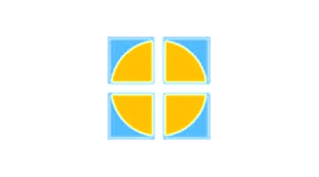
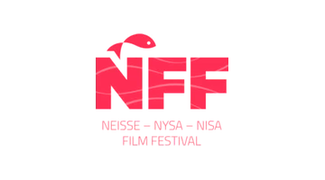
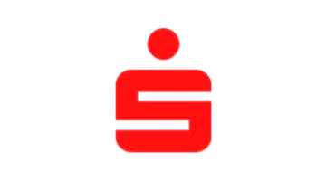
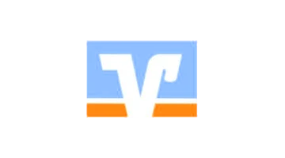
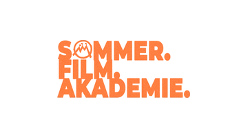
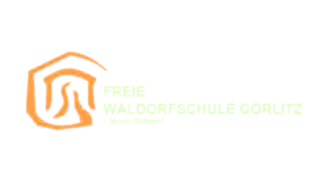
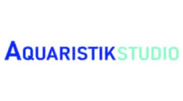
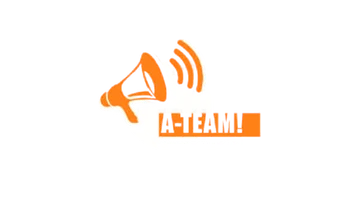
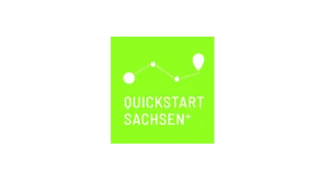
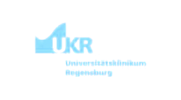
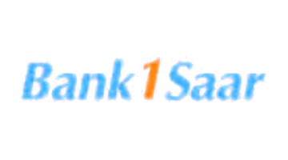
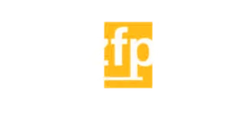
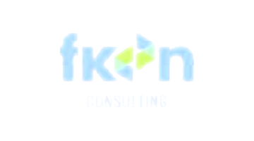
Ihr Film soll packen, nicht einschläfern!
Sie haben Lust auf einen weiteren hochauflösenden Streifen Medienmüll, der auf Ihrer Website vermodert? Dann sind Sie bei mir falsch.
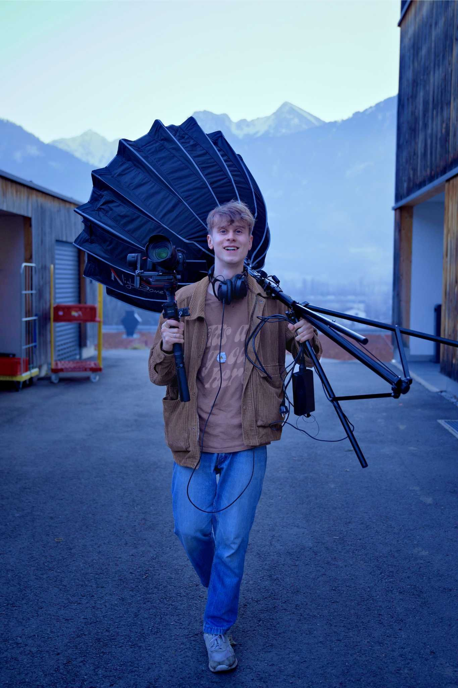
Meine Mission ist es, Filme zu kreieren, die Menschen fesseln, emotional berühren und überzeugen.
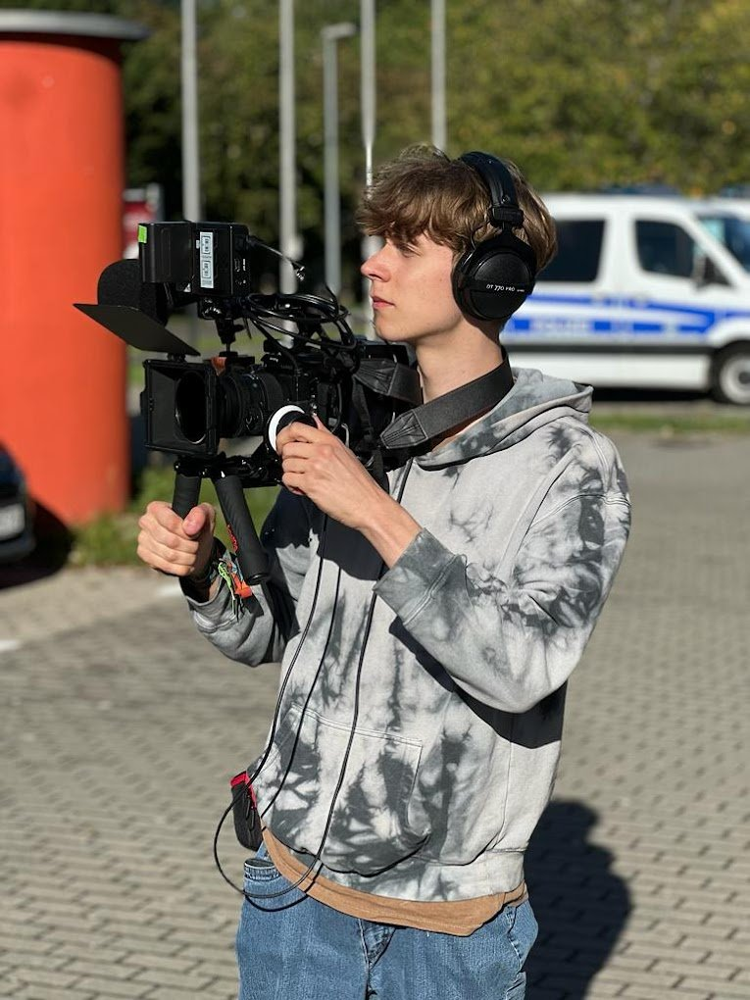
Wie das geht?
-
Zuhören
Ich höre mir ganz genau an, welche Geschichte Sie erzählen wollen und bei wem sie ankommen muss.
-
Konzept entwerfen
Anhand dessen entwerfen wir gemeinsam ein maßgeschneidertes Medienkonzept, das Ihre Message an Ihren Wunschkunden bringt.
-
Film zaubern
Und dann zaubere ich Ihnen einen Film auf die Leinwand (oder besser genau dahin, wo sich Ihre Zielgruppe tummelt), der authentisch überzeugt.
Dass die handwerkliche Qualität stimmt, versteht sich von selbst.
Beispielprojekte
Eine Auswahl meiner Arbeiten. Wählen Sie ein Projekt aus, der Film startet direkt hier.
Imagefilme, Events, Kampagnen
- Bistum GörlitzImagefilm2:04
-
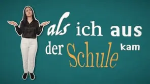
ODEGAzubi-Story Eugenia1:42 -
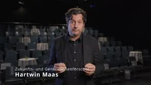
Generationendialog2:49 -
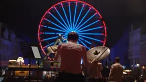
Altstadtfest3:50 -
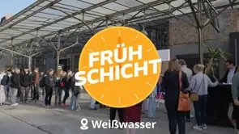
SASFrühschicht Weißwasser 20262:53 - SASStrukturwandeltagung2:28
-
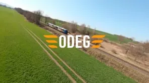
ODEGEuronahverkehr2:07 -
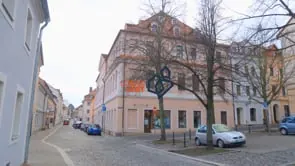
Löbau lebtImagefilm2:04 -
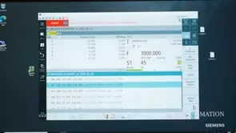
Pro Material LausitzKick-off-Opener0:32
Weitere Projekte
Die Filme liegen bei Vimeo. Erst wenn Sie einen Film starten, wird er von dort geladen und es werden Daten an Vimeo übertragen.
Hoch hinaus geht es heute im Hochformat!
Maßgeschneidert für Ihre Zielgruppe auf jeder Plattform.
Denn egal ob Dorfdisko, Staatskanzlei oder Jugendcamp: Jedes Publikum bekommt den Clip, der zu ihm passt.
-
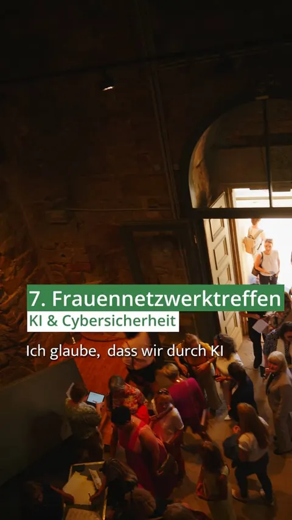
Frauennetzwerktreffen1:29 -
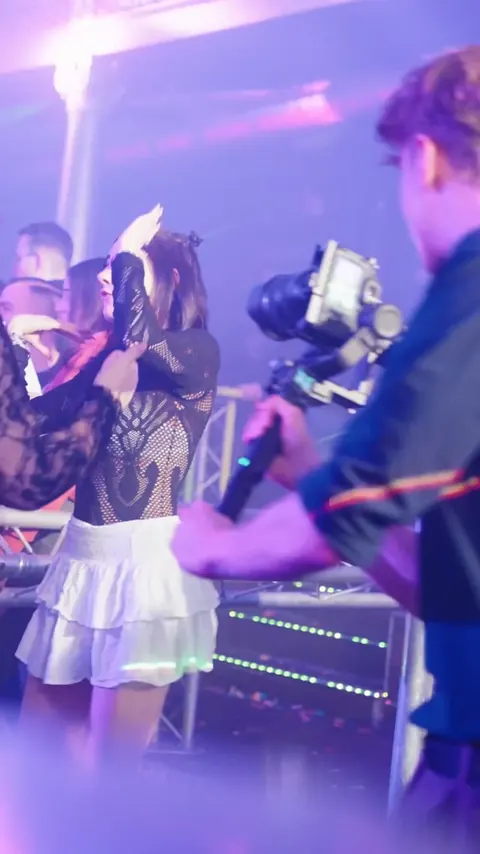
Party0:22 -
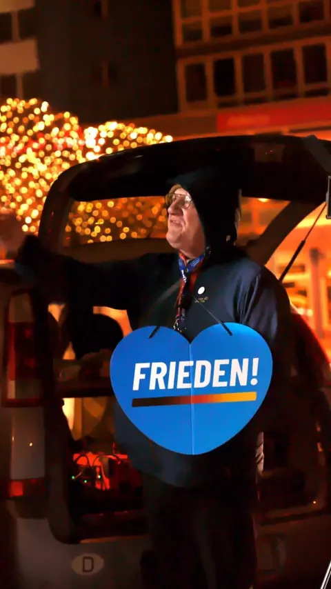
Grill den Roschek3:29 -
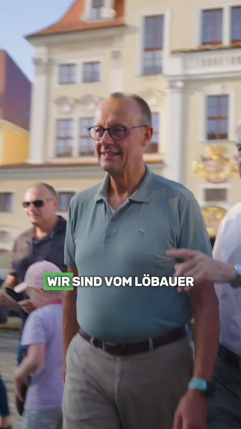
herzmerz0:58 - Politik und Pizza1:11
- Fleischerei Eichler1:03
Noch mehr Reels gibt es auf Instagram.
@tillderburner auf InstagramWas meine Kunden sagen
Alle Google-Bewertungen ansehen- Michael Kretschmer0:13
-
Manuela Thomas abspielen
Manuela ThomasSNL, 0:53
-
Dietmute Graf abspielen
Dietmute GrafODEG, 0:44
-
Johann Wagner abspielen
Johann WagnerBistum Görlitz, 0:54
-
Sascha Leps abspielen
Sascha LepsStreamcheck, 1:22
-
Max Hilse abspielen
Max HilseLöbau lebt, 0:32
-
Konrad Treppe abspielen
Konrad TreppeRacemap, 0:56
- Gerd Weise0:45
Noch unentschlossen? Nur die Ruhe – Sie müssen hier nichts entscheiden und erst recht nichts riskieren.
Sollte Sie das Ergebnis nicht zufriedenstellen, zahlen Sie keinen Cent!
Mein Geschäftsmodell basiert auf zufriedenen Kunden, die wiederkommen und weiterempfehlen. Ich muss also abliefern.
Auch wenn es riskant für mich ist – sollten Sie nicht kriegen, was Sie wollen, wird mein Konto keinen müden Pfennig sehen.
Deshalb gebe ich alles, um Ihnen genau das zu bieten, was Sie wirklich weiterbringt, und vertraue ganz auf Ihre Ehrlichkeit als zuverlässiger Geschäftspartner.
Was ist jetzt der nächste Schritt?
Ihre Reise zum digitalen Medienerfolg beginnt mit einem unverbindlichen Konzeptgespräch.
Mit kostenlosen Marketing-Ideen.
Lassen Sie uns ein Brainstorming machen. Wir sprechen über Ihr Unternehmen, Ihre Ziele und die zugehörige Zielgruppe.
Dann schauen wir, ob Ihnen mein Mediamarketing weiterhelfen kann.
Im besten Fall
gehen wir aus dem Gespräch mit einem Plan, auf dessen Grundlage ich Ihnen dann ein unverbindliches Angebot erstelle.
Im schlimmsten Fall
verduften Sie mit einem Bündel neuer Ideen und einem frischen Blickwinkel auf Ihr Business.
Noch Fragen?
Hier gibt's Antworten!
Ihre Frage ist nicht dabei?
Rufen Sie einfach an oder schreiben Sie mir.
Warum machst du das eigentlich?
Bereits in meiner Kindheit war mein Kopf voll von Geschichten, die ich mit der Welt teilen wollte. Eigene Theaterstücke und Comics waren damals mein kreatives Ventil.
Als ich auf dem alten Röhrenbildschirm meiner Grundschule ein Zeichentrickprogramm entdeckte, begann für mich eine Reise durch eine neue Welt. Die Welt des Filmemachens.
Schnell wurde aus dem Schulprogramm Adobe After Effects, DaVinci Resolve und Blender. Und aus den Stickman-Animationen wurden richtige Kurzfilme.
Während der Oberstufe begann ich dann, meine Leidenschaft auch beruflich auszuüben, und mir fiel schnell auf: Ich will Filmemacher sein!
Gesagt, getan, forstete ich mich durch Tutorials, experimentierte mit neuer Technik, lernte in Workshops, Praktika und von Mentoren. Am Ende absolvierte ich die Sächsische Filmakademie und machte mich schließlich selbstständig.
Seitdem ist es meine Mission, Menschen mit meinen Videos so gut weiterzuhelfen, wie ich kann. Und dabei Erlebnisse und Emotionen zu teilen, Menschen von einer Idee oder einem Angebot zu überzeugen oder Wissen verständlich zu machen.
Mein täglicher Antrieb ist es also, Menschen mit dem, was ich von klein auf liebe, zu helfen. Und davon leben möchte ich auch ganz gerne.
Für wen sind deine Videos geeignet?
Die Videos eignen sich für jeden, der im Internet eine Message, ein Gefühl, Informationen oder am besten alles zusammen verbreiten möchte.
Besonders profitieren davon kleine bis mittelgroße Unternehmer im B2C-Bereich, die zielgruppengerecht kommunizieren wollen und deshalb Inhalte für Website und Social Media brauchen.
Außerdem sind gute Videoinhalte ein absolutes Muss für jeden, der eine Personal Brand aufbauen will.
Wo hast du das alles gelernt?
Ich entwickle seit meiner Kindheit meine Filmfähigkeiten konstant autodidaktisch weiter und suche mir Mentoren, von denen ich lernen kann.
Außerdem war ich an der Sächsischen Filmakademie und habe meine Skills in Praktika und Workshops verfeinert.
Wie läuft das Gespräch ab?
Sie schreiben mir oder rufen mich an. Dann klären wir grob ab, ob ich Ihnen bei Ihrem Vorhaben helfen kann oder nicht. Falls ja, verabreden wir einen Termin für ein Konzeptgespräch.
Hier versuche ich, Ihr Angebot, Ihr Problem und Ihr Ziel zu erfassen. Und dann schauen wir gemeinsam, wie wir Ihre Zielgruppe im Rahmen der gegebenen Möglichkeiten so effektiv wie möglich ansprechen und bewegen können – und Sie mit möglichst wenig Aufwand möglichst weit bringen.
Wir brainstormen konkrete Ideen oder überdenken bestehende. Danach erstelle ich anhand dessen ein Angebot und es geht in die Details.
Wie funktioniert die 0-Risiko-Garantie?
Nach unserem Gespräch bekommen Sie ein Angebot. Das Projekt wird in etwa dem Angebot entsprechend umgesetzt. Wenn Sie aus irgendeinem Grund nicht mit dem Ergebnis zufrieden sein sollten, müssen Sie nichts bezahlen.
Bei großen Projekten, die sehr hohe Materialkosten und teures externes Personal erfordern, behalte ich mir eventuell vor, die Garantie nicht zu geben. Mit meiner Zeit und meinem Equipment ins Risiko zu gehen, kann ich verantworten. Aber ab einer bestimmten Grenze kann ich das nicht mehr gewährleisten.
Für die meisten Projekte trifft die Garantie aber zu, und falls nicht, teile ich das vorher immer mit.
In welcher Region bist du aktiv?
Ich habe meinen Sitz in Görlitz und Dresden, bin aber agil und flexibel einsatzbereit.
Wie sieht dein Team aus?
Ich arbeite je nach Projekt mit einem Team aus Freiberuflern zusammen. So kann man die Teamstärke effizient auf die Anforderungen und das jeweilige Budget zuschneiden.
Wo gibt es mehr Beispiele?
Manche Projekte sind im Internet nicht veröffentlicht oder ich kann sie nicht auf meiner Seite einbinden. Falls eine spezielle Art von Video gewünscht wird, kann ich gerne noch etwas zuschicken.
Was kostet eine Videoproduktion?
Der Preis hängt ganz von den Anforderungen und dem entsprechenden Arbeits- und Materialeinsatz ab. Sprechen Sie mich einfach an – wenn ich weiß, worum es geht, kann ich relativ schnell abschätzen, wie viel das Video kostet. Dann kriegen Sie ein Angebot und können entscheiden.
Wenn ein fixes Budget vorliegt, kann ich Ihnen auch darauf basierend ein Konzept entwickeln. Dass ein 500-€-Video dann anders aussieht als ein 5000-€-Video, sollte klar sein.
Wie kommen die Preise zustande?
Die Konzeption wird stundenweise je nach Aufwand berechnet. Der Dreh wird in Tagessätzen und Halbtagessätzen berechnet. Dazu kommen Leih- bzw. Bereitstellungsgebühren für Technik sowie Fahrt-, Speicher- und Materialkosten.
Die Postproduktion (Schnitt, VFX, Colorgrading, Sounddesign) wird stundenweise abgerechnet. Dazu können Kosten für spezielle Musiklizenzen oder Ähnliches kommen.
Das heißt übrigens: Wenn man mehrere Sachen an einem Tag drehen kann, entsteht ein natürlicher Rabatt.
Was nicht auf der Rechnung steht, aber trotzdem in den Preis (leider teils nicht in die Köpfe von Nicht-Filmemachern) hineingeht:
- Software- und Lizenz-Abos
- ständige Weiterbildung
- Techniktest und Instandhaltung vor und nach jedem Dreh
- Technik, die viel zu schnell kaputtgeht und veraltet
- Kommunikation (Mails schreiben, Calls machen etc.)
- Daten kopieren, sichern, verschicken etc.
- Akquise
- Buchhaltung und Steuern
Was machst du sonst noch so?
Abgesehen von meinen freiberuflichen Projekten arbeite ich hin und wieder an großen Filmsets im Licht-Department und versuche, so viel wie möglich für meine eigenen Produktionen mitzunehmen.
Außerdem veranstalte ich regelmäßig Filmcamps für Jugendliche, um meine Leidenschaft zu teilen und jungen Menschen eine neue Perspektive zu eröffnen.
Kann ich deine Technik für eigene Projekte leihen?
Ja, gerne doch.
Kann ich bei dir ein Praktikum machen?
Sehr gerne! Ich hab einen Arbeitsplatz, tolle Technik und spannende Projekte für dich parat. Einfach Kontakt aufnehmen, dann schauen wir, ob es passt ;)
Wie kann ich dich kontaktieren?
Ruf mich einfach an oder schreib mir eine Nachricht ;)
Wow! Sie sind ja immer noch da.
Besten Dank für das Interesse bis zum Ende. Ich glaube, an diesem Punkt sollten Sie wirklich einfach anrufen!
Ich freue mich auf Sie!
- Telefon
- 0176 805 068 50
- Nachricht schreiben
- mail@bettervideos.de
- Adresse
- Mosczinskystraße 10
01069 Dresden